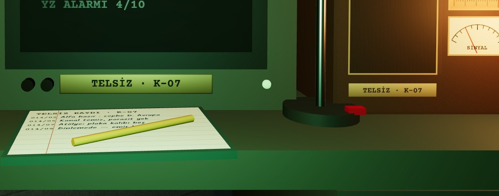

ESKİ → YENİ
haritaAd 28 px, her bölgede %100, işaret 26 px, çakışan yerler → ad 40–48 px doku (K1 ortasında ~17 px), %100 ikinci satırda 28 px, sektör işareti 38 px, sabit etiket yerleri. Cephe bloğu: ad + sektör şeridi + yüzde + alan ve imza glifi.
FON“0620”, kırmızı onda bir çarkı → 062,0: pirinç virgül ve açık renk onda bir çarkı. Kırmızı yalnız tehdit ve işgalde kalır.
teleksMasadaki kâğıt K1'de okunmuyordu → son mesaj makinenin önüne asılan ön kâğıtta: kod 50, durum 66, mesaj 50 px doku (K1'de ~14 / 18 / 14 px).
CRTYedi küçük satır → boşta dört satır: DİNLEMEDE (ters video), ALFA · HAZIR, cephe / sektör, YZ ALARMI. İlk üçü K1'de okunur; ayrıntı CRT pozunda.
oda kartıÜç bilgi tek satırda ~10 px → iki satır: ad 84 px, “SV 1 · 2/2” 68 px doku (K1'de ~16 / 14 px).
panoİçeriksiz mantar pano → KURTARILAN BÖLGELER: başlık kartında sayaç (00/12), her özgür bölgeye mavi damgalı kart, sıradaki hedef kurşun kalemle.
kapıBu pozdan görünmüyordu → anahtar rayına 4 · KAPI tuşu (ray beş tuştan altıya). Ziyaretçi bekleyince tuşun lambası yanıp söner, tuşa elle yazılmış fiş bağlanır.
harekât iziİlk vardiya ile 14. vardiya aynıydı → yedi iz: pano kartları, umut tenekesi (3 aşama), teleks rulosu ve yırtık kâğıt yığını, EVRAK tepsisinin kalınlığı, tebeşir vardiya çentiği, kupalar, maket odaları ve depo bandı.
eğitim notuAnalistin el notu sağ altta, şalter plakasının hemen altında; başlıkta ADIM n/12.
CRT POZU · AYNI EKRAN

Telsizin yüzü: kanal skalası K-07, SİNYAL göstergesi (HAT AÇILIYOR anındaki sinyalle aynı değer), SES / AYAR düğmeleri, pirinç plaka. Kayıt defteri: son dört kayıt, Kalam 40 px doku.
NESNELER
sayaç rafıÖn yüz 1,56 × 0,212 m, 6 modül × 0,247 m · bakalit #24180F, pirinç çerçeve #B8955A · rakam #EFDCAE; onda bir çarkı #E9DDBE üstüne #1C150E.
FON virgülüØ 11 mm nokta + kuyruk, pirinç #D4B06E, çarklar arasında 15 mm boşluk.
pano0,78 × 0,54 mantar #A27B52, çerçeve #6B4A2E · başlık kartı 0,36 × 0,104 · bölge kartı 0,15 × 0,095 #F6F0DE, damga #1A4789 · boş yer: ahşap raptiye.
alarm panosu0,48 × 0,29 bakalit + pirinç · 10 adım ölçek (1–7 #E9DDBE, 8–10 #C0281C) · lamba Ø 9 cm, ≥ 8'de emissive #F0443A 1,8.
teleks kâğıdı0,26 × 0,19 #EFE4BC, krom klips 6 cm, 3° öne eğik.
anahtar rayı1,40 × 0,15 · 6 tuş, aralık 0,226 m · plaka 0,128 (Home 0,10) · kapı lambası Ø 18 mm #FFB347 emissive 3,4 + sarı halka.
çentik, tenekeVardiya çentiği 0,5 × 0,125 decal, tebeşir #E6E2D4 α .82 · umut tenekesi Ø 7 cm galvaniz, yaprak 3 → 7 → 11.
ETKİLEŞİM VE DURUMLAR
4 · KAPINormal: lamba sönük. Ziyaretçi var: amber, 1 Hz. Üzerinde: sarı kontur + etiket “KAPI · ZİYARETÇİ VAR”. Basılı: tuş 6 mm iner, kamera kapı pozuna 0,45 s. Devre dışı: baskın sürerken; etiket nedenini yazar. Yetersiz kaynak durumu yok.
sayaçlarDeğer değişince çarklar döner; üzerinde “FON · 62,0” etiketi (sade hoverCard). Tıklanmaz.
pano, alarmBilgi; üzerinde: kartın / alarmın etiketi (“YZ ALARMI · 4/10 · 10'da karşı saldırı”).
eğitim notuBoşluk sonraki adım, Esc kapatır; adımın hedefi yapılınca kendiliğinden ilerler.
HAREKET VE SES
bölge özgürVardiya raporu kapanınca kart üstten düşer (0,35 s), raptiye “tık”, mavi damga 0,1 s “tok”; başlık sayacı 0,35 s döner.
ziyaretçiÜç vuruş (0,9 s) → kamera kapıya (bugünkü gibi). Esc ile dönünce lamba 1 Hz yanıp söner, fiş 0,2 s sallanır.
FONÇarklar 0,35 s, çark arası 0,12 s; onda bir çarkı en son, her çarkta hafif “tık”.
alarm, teleksAlarm ≥ 8: lamba 0,08 s'de yanar, alçak uğultu. Yeni teleks: kâğıt 0,4 s'de yazılır, eski ön kâğıt koparılır ve yığına düşer.